Deel 30 — Masterproef (twee dagdelen): boardsimulatie fusiescenario
Slidedeck · Ductus-cursus Domain-Driven Design · niveau 3 · deel 30 van 30 · twee dagdelen
Sectie 0 — Opening
Slide 1 — Titel Deel 30 — Masterproef: boardsimulatie fusiescenario Domain-Driven Design · niveau 3 · deel 30 van 30
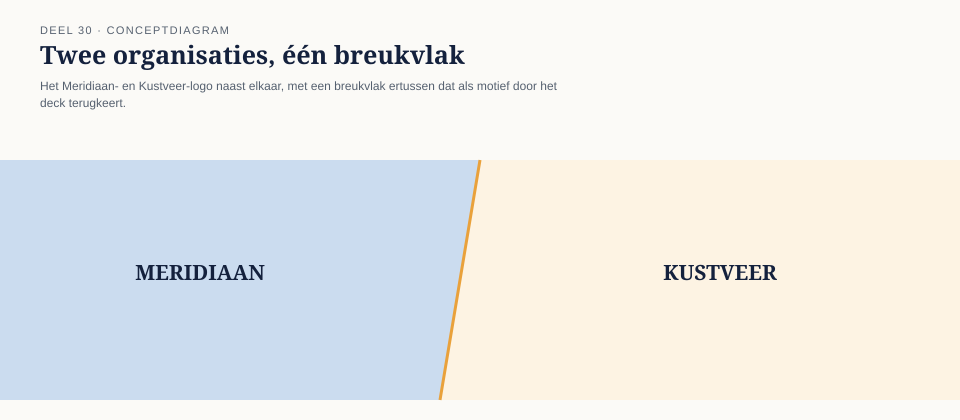
Slide 2 — Dit is het laatste deel Dertig delen. Drie niveaus. Eén boog. Geen nieuw instrument vandaag — wel de zwaarste toepassing van alles wat er al is.
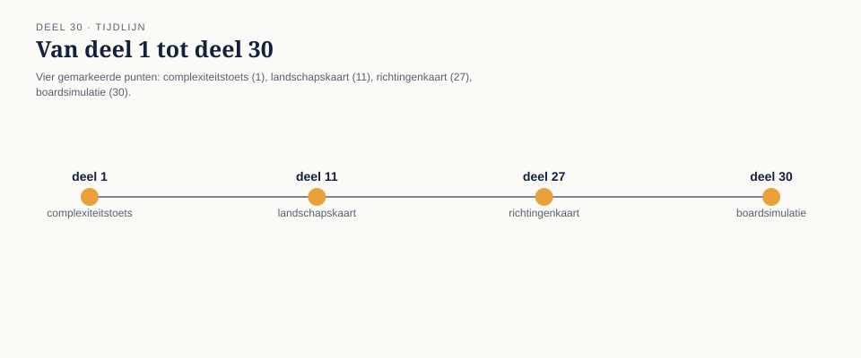
Slide 3 — Waar we staan in het dossier Deel 27: drie botsingspunten, drie richtingen, geen besluit. Deel 28: de oordeelstoets — wat is een modelvraag, wat een uitkomstvraag. Deel 29: de examenvorm geoefend. Deel 30: het echte besluit, verdedigd voor een bord van vier.
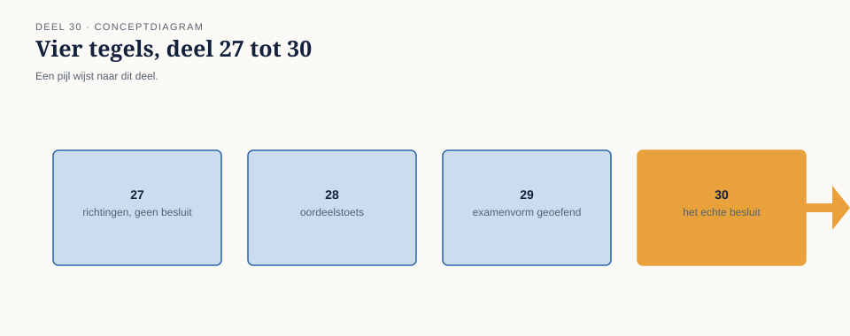
Slide 4 — Wat je aan het eind van dit deel hebt
- een volledig context-mappingbesluit, per botsingspunt
- de mandaatgrens expliciet getrokken
- dat besluit verdedigd voor vier rollen, onder voorbereide én onvoorziene vragen
- ervaren hoe de rubriekfilosofie voelt als er echt iets op het spel staat
Sectie 1 — De opdracht
Slide 5 — Het dossier in het kort Meridiaan neemt Pensioenfonds Kustveer over. 14.000 deelnemers. Drie botsingspunten in het deelnemersmodel. Negen maanden tot de Wtp-deadline.
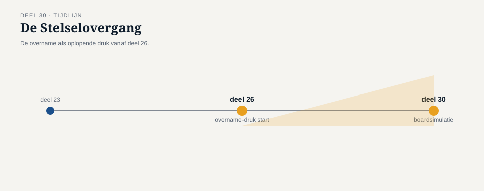
Slide 6 — De drie botsingspunten
| Punt | Meridiaan | Kustveer |
|---|---|---|
| Waardeoverdracht | Standaardmethode | Coulanceregeling (cao 1994) |
| “Partner” | Contractgebonden | Ook: aantoonbare huishouding zonder contract |
| “Deelnemer in opbouw” | Vanaf eerste premie | Vanaf ingangsdatum dienstverband |
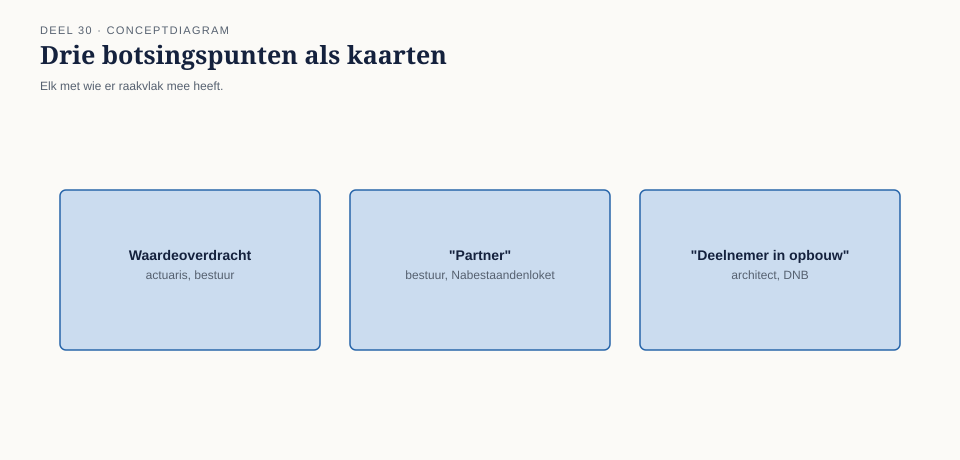
Slide 7 — Drie richtingen, uit deel 27 A. Shared kernel — één gedeeld model B. Anti-corruption layer — vertaling bij de grens C. Tijdelijk conformist — Kustveer volgt voorlopig Meridiaan
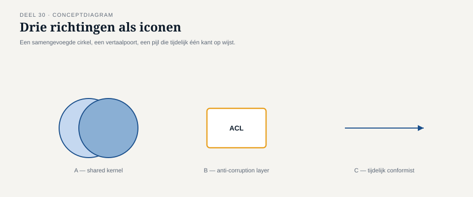
Slide 8 — De opdracht Kies, voor elk botsingspunt, een richting. Onderbouw waarom níet de andere twee. Trek de mandaatgrens: wat draag jij, wat draagt het bestuur. Benoem de prijs, eerlijk, aan wie.
Slide 9 — Wat níet gevraagd wordt Geen oplossing waar niemand op achteruitgaat. Die bestaat hier niet. Gevraagd wordt: een verdedigbaar besluit — dat kan “nee, dit niet” zijn, of “ja, ondanks de kosten” — mits onderbouwd.
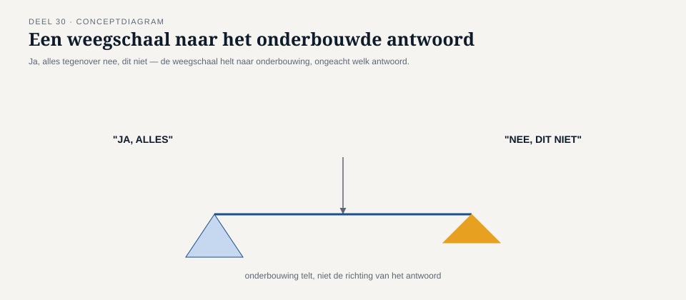
Sectie 2 — De vier rollen
Slide 10 — Het bord Vier stoelen. Vier belangen. Geen van de vier hoeft onder de indruk te zijn.
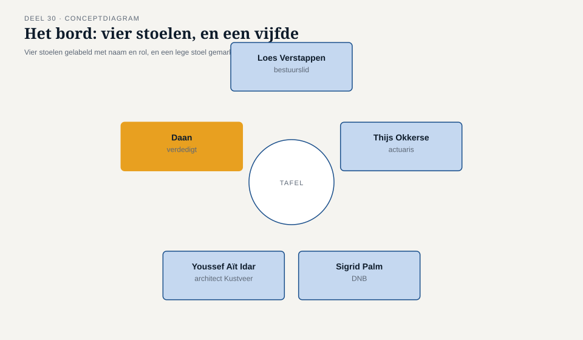
Slide 11 — Loes Verstappen Bestuurslid namens de voormalige Kustveer-deelnemers. Toetssteen: de deelnemer die zij zich concreet kan voorstellen. “Ik hoor drie richtingen, en ik hoor voor elk een prijs. Wie zegt straks: dit is de prijs die we kiezen?”
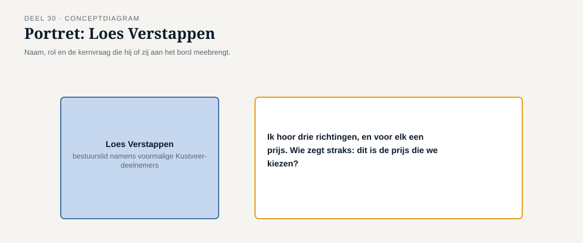
Slide 12 — Thijs Okkerse Actuaris. Heeft de cijfers al klaarliggen. “Ik kan voor elke richting laten zien wie wint en wie verliest, in euro’s en maanden. Wat ik niet kan, is zeggen welke verliezer aanvaardbaar is.”
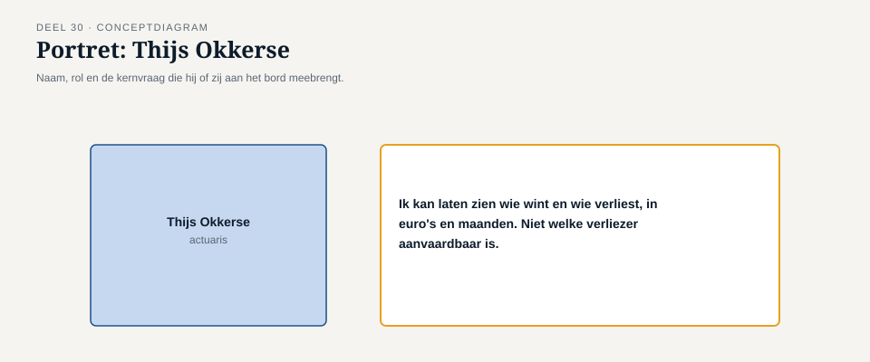
Slide 13 — Sigrid Palm Namens DNB. Taal van risico en aantoonbare datakwaliteit, niet van patronen. “Is de datakwaliteit van de ingevaren Kustveer-populatie aantoonbaar geborgd — ongeacht welke richting u kiest?”
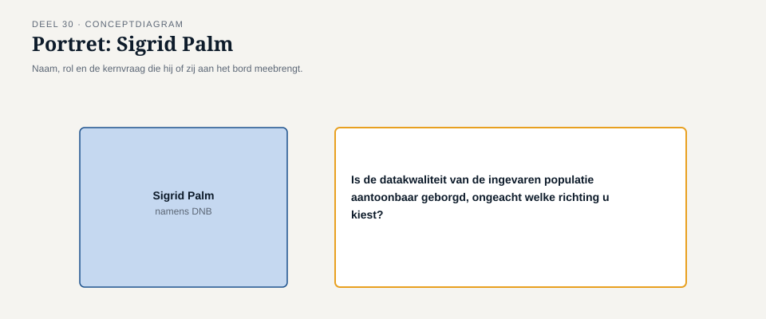
Slide 14 — Youssef Aït Idar Architect van Kustveer. Elf jaar overzicht, veertien jaar zorgvuldig opgebouwde uitzonderingen. “Vertel me eerst welk probleem van óns dit oplost, voordat u vertelt welk probleem van u het onze veroorzaakt.”
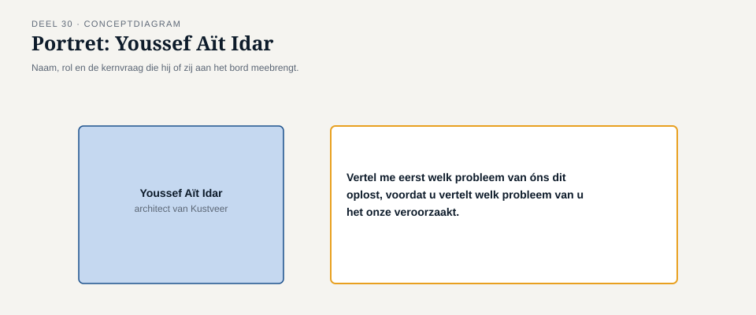
Slide 15 — Wie verdedigt Daan Kuiper — of het volledige architectuurteam bij teamwerk. Geen vijfde, neutrale stem die voor je antwoordt. Foppe zat er in deel 27-29 ook niet voor.
Sectie 3 — Spelregels
Slide 16 — Half vooraf, half onvoorzien De helft van de vragen ken je vooraf. De andere helft komt ter plekke. Dit is geen versimpeling — dit is hoe een echte bordvergadering werkt.
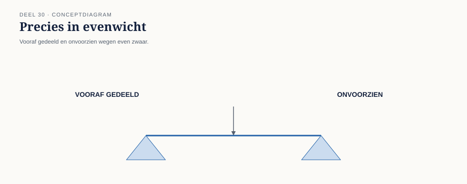
Slide 17 — Waarom deze vorm Voorspelbare vragen testen of je grondig hebt voorbereid. Onvoorziene vragen testen of je positie standhoudt zonder script. Beide vaardigheden zijn nodig — bij deze fusie, en bij elk echt architectuurbesluit.
Slide 18 — Volgorde van de verdediging
- Jij opent met je claim, per botsingspunt.
- De vier rollen bevragen, in willekeurige volgorde.
- 20-30 minuten, inclusief mondelinge terugkoppeling.

Slide 19 — Uit de rol Na elke verdediging stappen de rolspelers uitdrukkelijk uit hun rol. De bevraging en de feedback zijn twee verschillende momenten. Verwar ze niet.
Sectie 4 — De instrumenten nog één keer
Slide 20 — De richtingenkaart (deel 27) Kolom 1: wat lost deze richting werkelijk op? Kolom 2: wat kost hij, aan wie? Kolom 3: wat vraagt hij van de organisatie om vol te houden? Laatste veld: is het verlies omkeerbaar, en door wie gedragen?
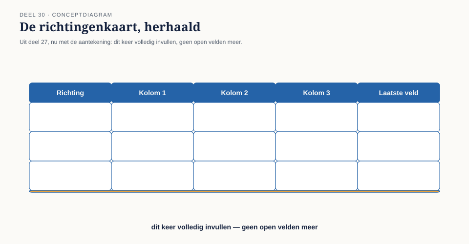
Slide 21 — De oordeelstoets (deel 28) Stap 1: de vraag scherp formuleren. Stap 2: modelvraag of uitkomstvraag? Stap 3: splits waar hij in beide categorieën valt. Laatste veld: wat gebeurt er als je deze grens niet trekt?
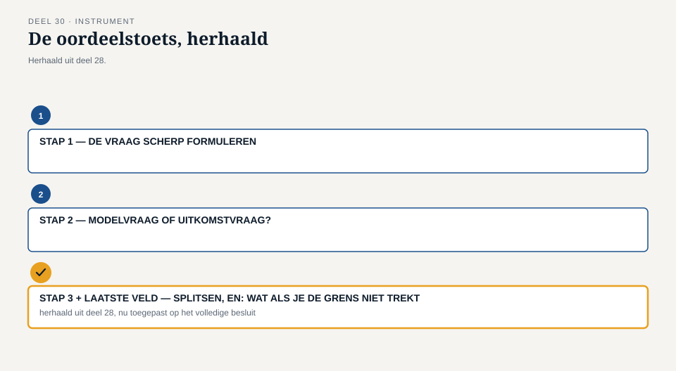
Slide 22 — De verdedigingskaart (deel 29) Veld 1: de claim. Veld 2: onderbouwing per alternatief. Veld 3: wat buiten je mandaat valt. Laatste veld: de vraag die je hoopt dat niemand stelt.
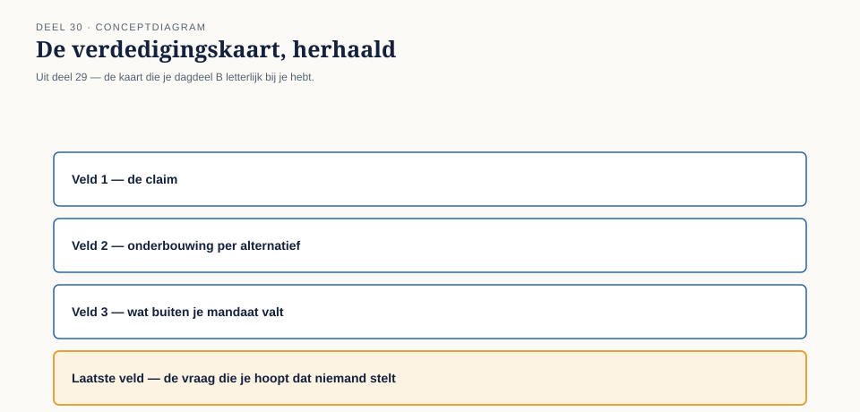
Slide 23 — Drie instrumenten, één besluit De richtingenkaart bepaalt wat je kiest. De oordeelstoets bepaalt wat je draagt. De verdedigingskaart bepaalt hoe je het presenteert.
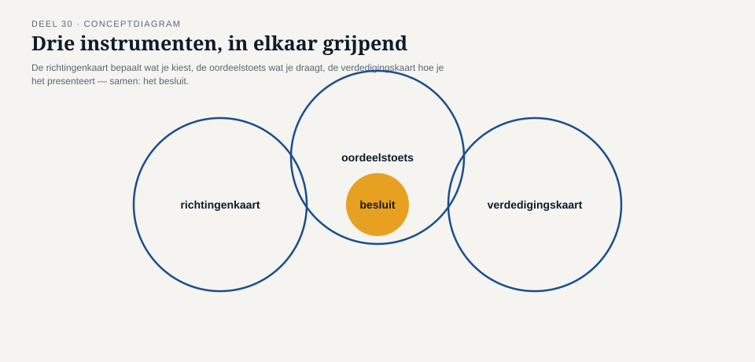
Sectie 5 — Dagdeel A: de uitwerking
Slide 24 — Dagdeel A in het kort Individueel of in team: het besluit opstellen. Je krijgt nu de vooraf gedeelde vragen van de vier rollen. Aan het eind: peer review langs de rubric.
Slide 25 — Opdracht 1 — de richtingenkaart afmaken Voor elk van de drie botsingspunten: kolom 2 en het laatste veld invullen, die deel 27 nog open liet.
Slide 26 — Opdracht 2 — de oordeelstoets op “partner” Het gevoeligste punt. Formuleer de vraag scherp. Splits modelvraag en uitkomstvraag. Beantwoord alleen wat bij jou hoort.
Slide 27 — Opdracht 3 — de verdedigingskaart voor het geheel De kaart die je dagdeel B letterlijk bij je hebt.
Slide 28 — Opdracht 4 — oefendoorloop Tweetallen, twee vooraf gedeelde vragen, hardop beantwoorden. Niet beoordeeld — wel wennen aan de druk.
Slide 29 — Vooruitblik dagdeel B Volgende sessie: de kamer zelf. Vier stoelen, geen script.
Sectie 6 — Dagdeel B: de boardsimulatie
Slide 30 — Dagdeel B in het kort De echte verdediging, duo/team voor duo/team. Directe mondelinge terugkoppeling na elke verdediging.
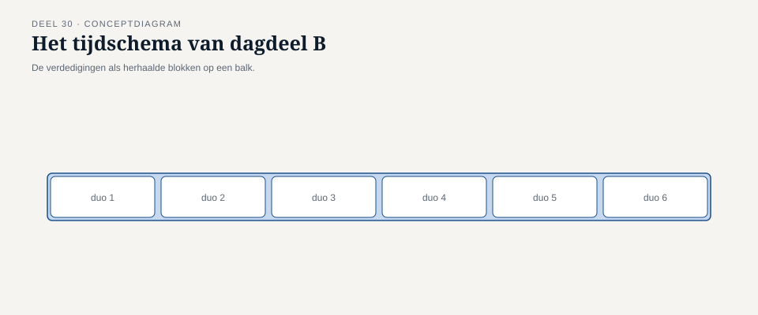
Slide 31 — Voor je de kamer ingaat Je claim in twee tot drie zinnen per botsingspunt. Je zwakste punt, al benoemd voordat iemand ernaar vraagt. Je weet wie er, per botsingspunt, iets verliest.
Slide 32 — Tijdens de verdediging Geef ruimte aan stilte voordat je antwoordt. Een terechte tegenwerping erkennen is sterker dan hem wegredeneren. Standhouden betekent niet: nooit bijstellen.
Sectie 7 — De rubric
Slide 33 — Eén principe Een onderbouwd “nee, dit niet” weegt zwaarder dan een oppervlakkig “ja, alles.” Dertig delen lang opgebouwd. Hier voor het laatst, met het meeste gewicht.
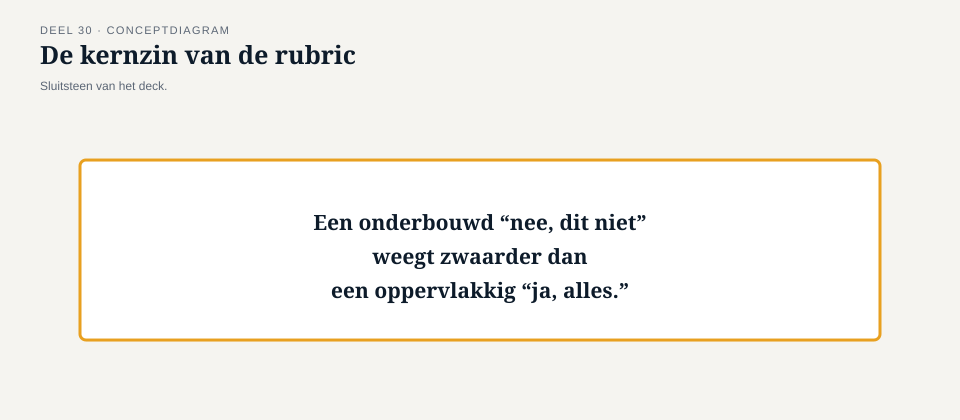
Slide 34 — Criterium 1 — Onderbouwing per botsingspunt Is elk alternatief serieus overwogen, niet alleen genoemd om afgeserveerd te worden?
Slide 35 — Criterium 2 — De mandaatgrens Is helder wat een modelvraag is en wat een uitkomstvraag — en aan wie die laatste wordt overgedragen?
Slide 36 — Criterium 3 — De prijs, eerlijk benoemd Wie wint, wie verliest, tijdelijk of structureel — met een concreet vervolgmoment waar “tijdelijk” wordt beweerd?
Slide 37 — Criterium 4 — Standvastigheid Houdt het besluit stand onder tegenspraak, en wordt een terechte correctie erkend zonder in te storten?
Slide 38 — Niet gelijk aan “altijd nee” Een nee zonder onderbouwing is niet sterker dan een ja zonder onderbouwing. Het gaat om de onderbouwing — niet om de richting van het antwoord.
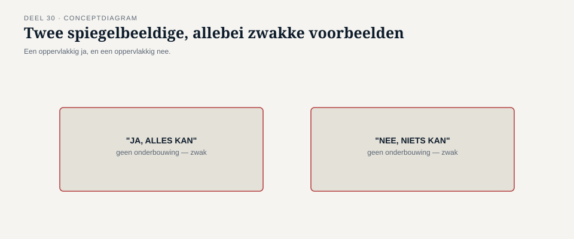
Sectie 8 — Terugblik op de hele cursus
Slide 39 — Deel 1: de complexiteitstoets Eén domeinonderdeel. Eén developer die net het domein binnenkwam. Is dit complex genoeg voor DDD?
Slide 40 — Deel 28: dezelfde vraag, groter De hele fusieopgave. Is dit, geheel of gedeeltelijk, een modelleervraagstuk? Hetzelfde soort antwoord: niet overal, niet nergens — precies waar de toets het aanwijst.
Slide 41 — Deel 30: hetzelfde antwoord, verdedigd Niet alleen uitgesproken — verdedigd, tegenover mensen zonder reden om het cadeau te doen.
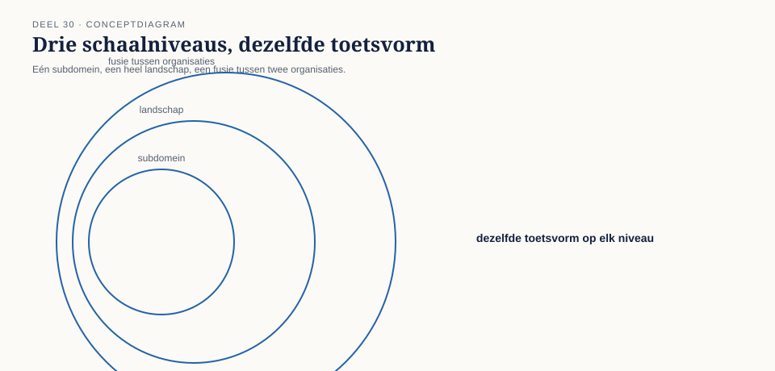
Slide 42 — De boog van dertig delen Niveau 1 — één subdomein, het Nabestaandenloket. Niveau 2 — het complete Meridiaan-landschap. Niveau 3 — een fusie tussen twee organisaties, onder een onomkeerbare deadline.
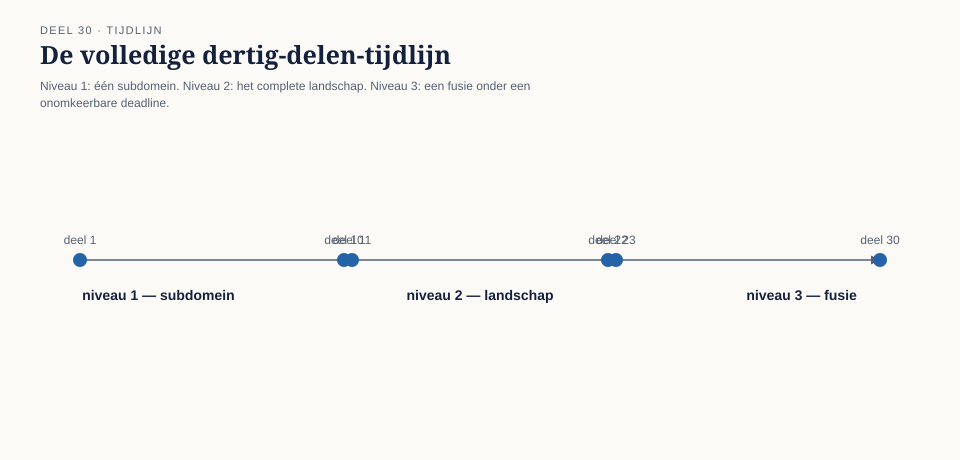
Slide 43 — Na dit deel Geen nieuw deel volgt. Wat volgt, is het werk zelf.
Slide 44 — Slot Dank voor dertig delen.